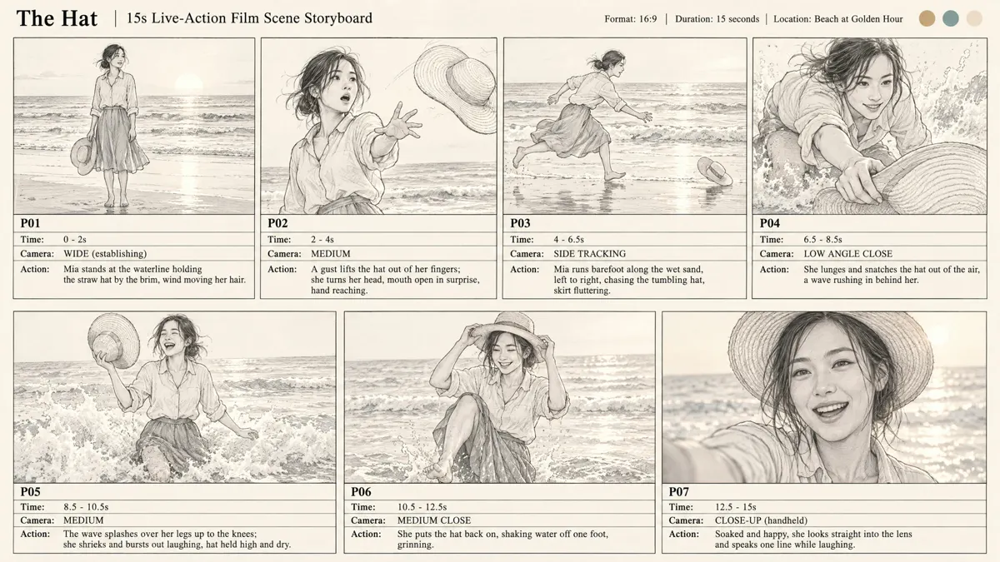

Disclosure: I'm an affiliate of MakeInfluencer.ai. If you subscribe through my links I earn a commission, at no extra cost to you. Example images and video on this page were generated with MakeInfluencer and are AI-generated.
Make AI videos with a recurring host who looks the same in every episode
For faceless channels and short films: design one character, then write one line and get a screenplay, a storyboard you approve and a short film with the same face, their own voice and lip-synced dialogue.
"The Hat", made from one line with Movie Maker, unedited. Example output (AI-generated).
From one line to a short film
- Write the idea. One sentence, for example "Golden hour. The wind steals her hat."
- Approve the storyboard. Nothing is filmed until you sign off the shots.
- Get the film. Same character in every shot, with voice and lip sync.

The storyboard step. Example output (AI-generated).
Built for series, not one-offs
Drawbacks: Movie Maker needs the Pro plan, longer films use more credits, and every clip still needs your review before posting.
Faceless channels
A consistent AI host for Shorts, TikTok and YouTube, so viewers recognise the channel without you on camera.
Story series
The same protagonist across episodes, pilots and music videos.
Many models, one place
Seedance, Kling, Veo, Sora and more in one dashboard and one credit balance.
For builders
A REST API and a Claude (MCP) connector for automated video workflows.
Plans
| Plan | Price | Pick it if |
|---|---|---|
| Creator | $39/mo $31/mo billed yearly | You want to try the character builder, images and 720p video first. |
| Pro | $89/mo $71/mo billed yearly | You'll post every week: trained custom character, 1080p/4K video, talking videos, Movie Maker. |
| Studio | $199/mo $166/mo billed yearly | Agencies running several clients or heavy API use. |
Prices from makeinfluencer.ai/pricing on 4 Oct 2026; check the live page. Plans run on monthly credits. Cancel anytime from your dashboard. Yearly billing makes sense only once you know you'll keep a weekly posting routine.
Movie Maker, 1080p video and talking videos are on Pro and above.
Questions
Will platforms accept AI-hosted videos?
Yes, with AI labels where required (TikTok and Instagram ask for them on realistic AI people). Original, labelled content is the safe path.
Do I need video-editing skills?
No. The storyboard and film are generated for you; you approve and download.
Can I automate it?
Yes, through the public REST API or the Claude connector.
What if it isn't for me?
Cancel anytime from your billing settings with no fees; your plan runs to the end of the period. Within 30 days of a payment, MakeInfluencer refunds credits you haven't used (per their refund policy, 29 May 2026).